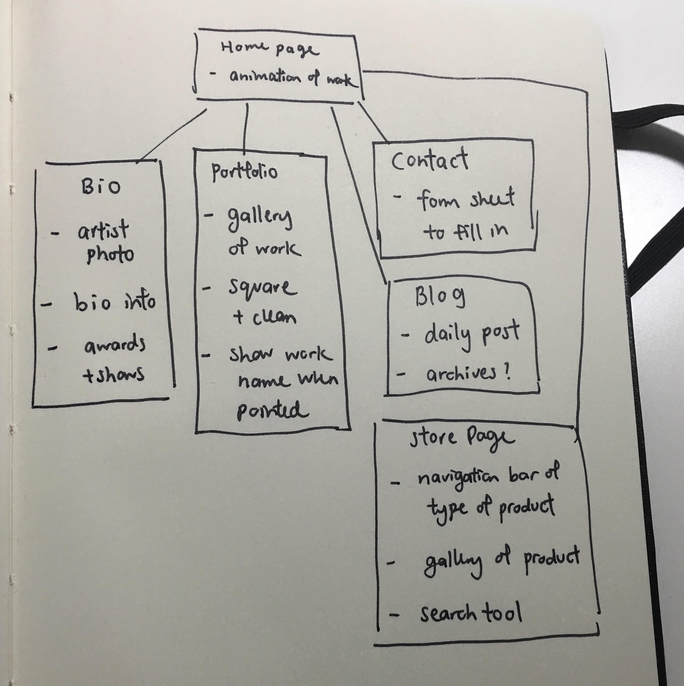
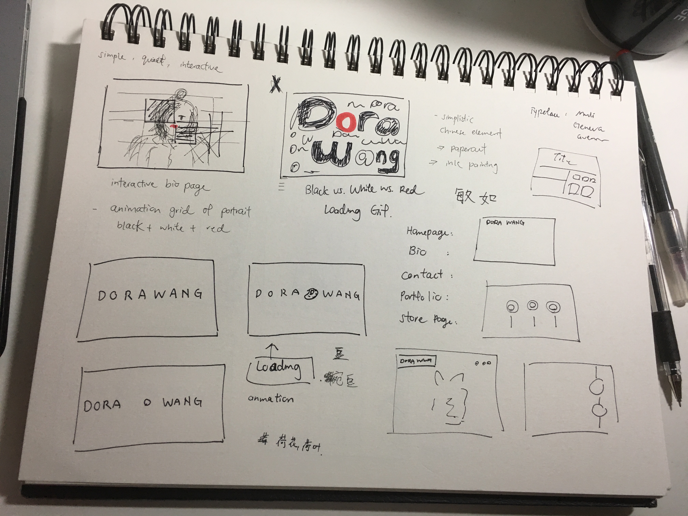
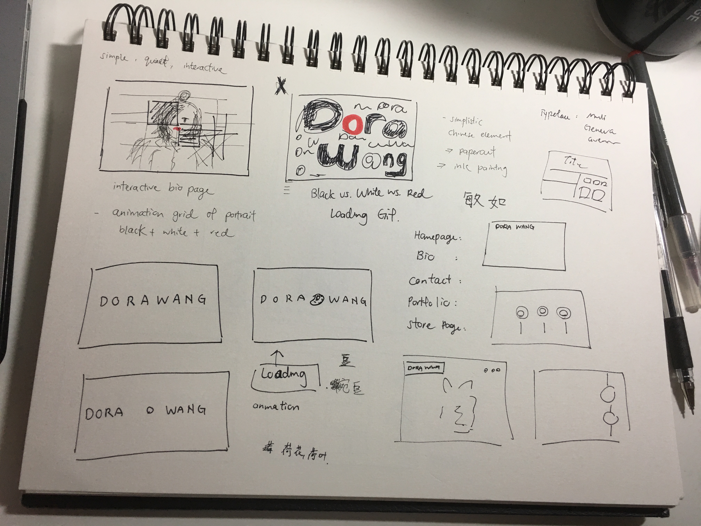

Process Page
Client: Dora Wang
Occupation: Illustrator / Student
Meeting Notes with Client
1. Why do you want a website?
I want a website because i want a platform online to display my artworks to people as a way to show my work to the world, to make friends, to find business opportunities and such. Also i also hope i can use my website to sell some of my artworks to people who like my work.
2. If they have an existing website why do they want a new one. What is wrong with the current website? Does it work well on mobile? Do they want a responsive design?
I have an existing website but it is very boring. It is simple, easy to navigate but it is not exciting so i hope my website could be more interesting for the people who visit my website.
3. What does your business do?
I am an illustrator so i sell some of my illustration pieces such as poster, postcards or stickers.
4. What are some requirements of your site? What must exist on the site? Menus, examples of work, contact information, etc…
It needs to have a homepage, menu bar that brings to work page, contact page, biography, store and blog.
5. Who do you think will be visiting your website? What types of people? Vendors, consumers, agents, recruiters, artists, clients?
I think people who will visit my website will be mostly students, in college or high school, and vendors perhaps to look at my illustration and product.
6. Can you list any websites that you really like?
I really like Kenya Hara and Susu So website, they are very simple and unique.
7. Are there any special features you need on your website? Audio player? Animations?
If it is possible to have some animation intro like a loading page or something, it will be cool.
Client Needs
My client is Dora Wang, a junior illustration major studying at MassArt currently. Dora's illustration work has been well known in the MassArt community and she is hoping to expand her name in the Boston community. Although Dora already has an existing portfolio website, it is indeed very plain and simple. She wants to have a interesting and engaging personal website that would make it exciting for the viewers who are visiting her website. Also she hopes the website would also serve as a personal branding website to promote her product. Based on that, some of Dora's request and needs are as followed. Before entering the website: a simple loading animation Homepage: A simple layout for the homepage that only display a few of best work in an "animation / gif" form below the webpage title and navigation bar. Navigation Bar: Includes Homepage, Bio, Contact, Portfolio, Blog, and Store page. Bio Page: An introduction about Dora and her experience and awards with a headshot photo. Contact Page: A fill in the blank form sheet for visitors to contact her. Portfolio Page: A gallery style page to navigate through Dora's work. When the mouse is placed on certain work, it will turn into the work's title and year with a opaque color background. Blog Page: A page to interact with Dora's viewer or supporter of her artwork where she can do daily or weekly post or something fun and interactive Store Page: A page for visitor to navigate her products. Need to be stylish, clean and attracting. In general the website also need: 1) A distinctive style that is clean, organized, easy to navigate. Established a set of color palettes that serve for the identity of the website. 2) No sub menu bar to make it look too busy. 3) Social media icons that lead to her personal instagram page.
Inspiration
- Nad Jozna
- Ernest Zacharevic
- Andy Hau
Architecture Diagram
Wireframe Draft & Sketch
 

Style Tile

New Notes from Client : 10/23/2016
Color focus on grey, light grey, white, and red. Minimalistic modern with Chinese elemetns style. Possible elements for website symbol: lotus flower and leaf.